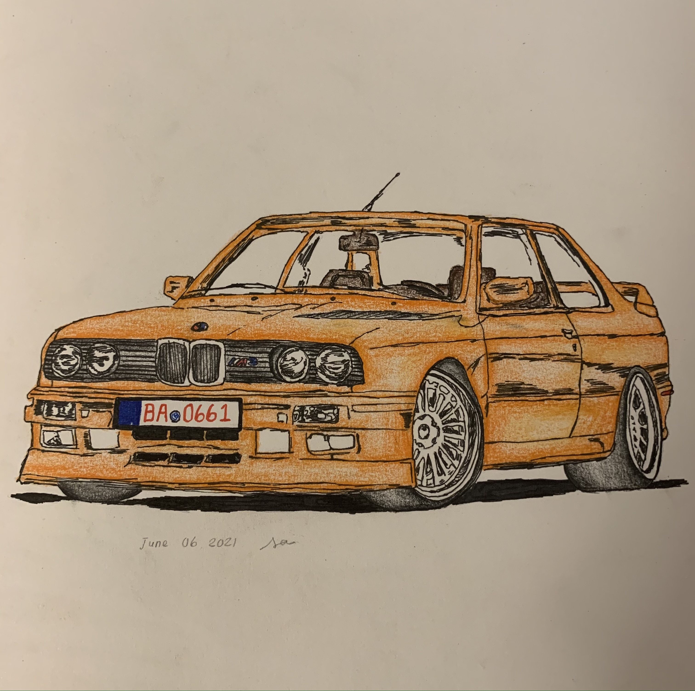
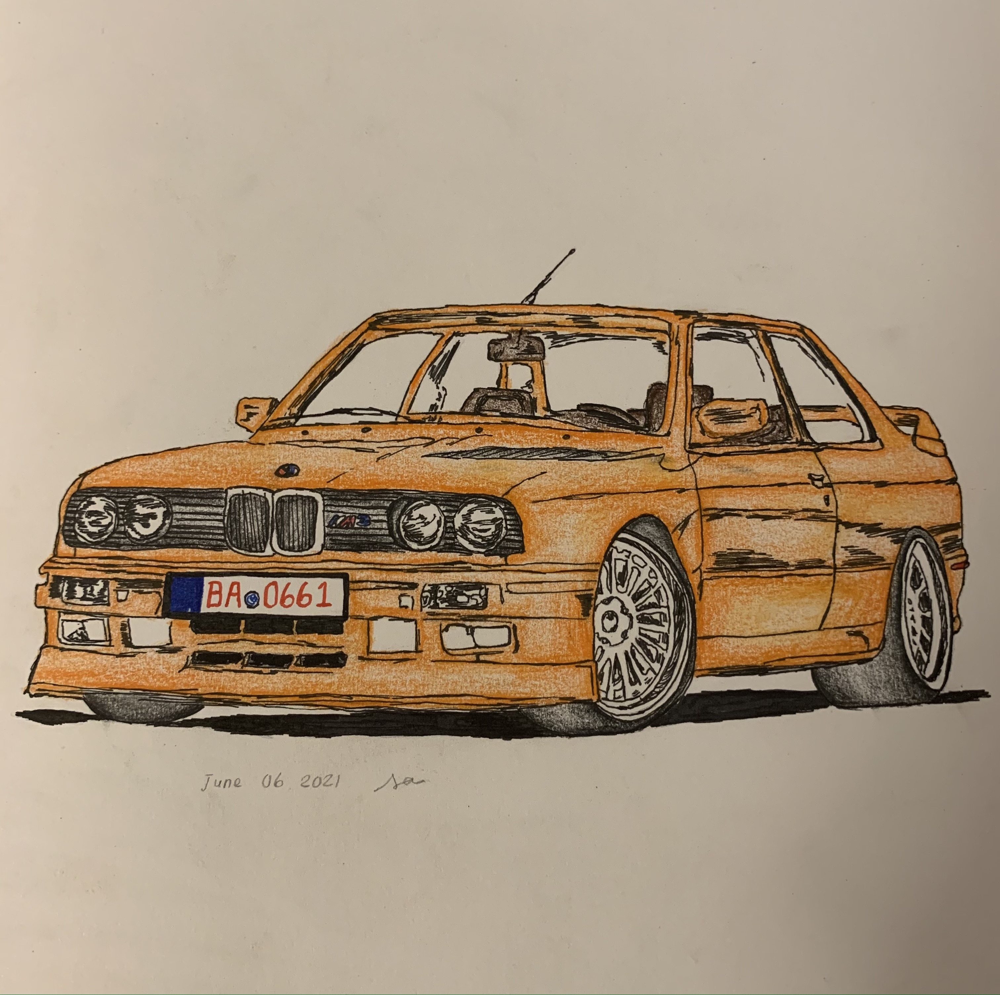

sayna's so dope webpage
welcome to this super duper cool website. I hope you enjoy this radical
code and also enjoy the structure of the wesbite.
my interests
| skateboarding |
illegal civ
Illegal civ is a skateboarding brand of young skaters from
california, who make videos and films and i really enjoy watching
their clips. I also love to watch Davont Jolly's, 'a day in the
life with the homies' videos since they make me forget about
everything stressful, as i watch awesome skate clips.
skateboard + me
I would say i watch more skateboarding than actually
skateboarding, but i have made a pact with myself for this summer
that i will go out and skateboard more, despite how terrifying it
seems.
|
| cinema |
movie theatres
Movie theatres to me brings so much nostalgia and memories of my
childhood, i find myself always cheered up when im at the movies.
Everything from the elite popcorn to the stale seats, there is
just something very comforting about it all.
film
I love movies and watching film to a extensive degree, i find
screenwriting to be one of the best jobs in the world. I love to
watch films from cult classics to independent features and think
critically about.
|
| soccer |
my soccer career
Currently, one of my summer goal is to increase my agility and
strength so i can tryout for the richmond hill 03/04 rep soccer
team in the fall. Playing soccer is a all time favourite hobby of
mine especially since i grew up playing it from such a young age.
favourite soccer player
My favourite soccer player is Endison Cavani. He used to play for
PSG and that was his prime in my opinion and now he plays for
manchester united which i cannot say im quite happy with since its
a premiere league team. But his game style and sportsmanship is
definitely admirable.
|
my artworks
a few sketches of mine from my art class this semester:
 

fashion
fashion is a important part of my life because i feel as though clothes
make up a very integral part of my day. So if im wearing an outfit i feel
comfortable in, i can take on the day better. I love to look at pieces of
clothing online, although i may not splurge on most of them, browsing
never hurt anybody. So here you can find an entire outfit i curated that
links to the websites each item is from.
-
prada black loafers
-
high rise blue redone levis jeans
-
brandy melville navy hoodie
-
cream white aritzia sweater quinn vest
the best movies of all time according to sayna ayerman


[1]
[2]
[3]
[4]
no country for old men
la la land
scarface
dazed and confused
[1] Ethan and Joel Coen, No Country For Old Men, 2007,
https://i.pinimg.com/564x/0b/b3/66/0bb36691b64f7f5056274490ea2489d6.jpg
[2] Damien Chazelle, La La Land, 2016,
https://upload.wikimedia.org/wikipedia/en/a/ab/La_La_Land_%28film%29.png
[3] Brian De Palma, Scarface, 1983,
https://i.pinimg.com/564x/66/27/03/66270304aa81234ab437159a203b29f0.jpg
[4] Richard Linklater, Dazed And Confused, 1993,
https://i.pinimg.com/564x/d4/d5/ea/d4d5eaf2bcc4e3e897670ec4d6b8ccee.jpg
sayna ayerman approved TM